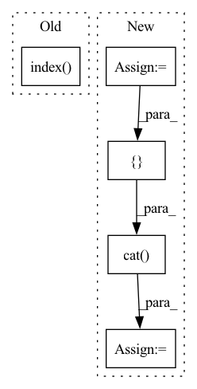

Pattern ID :2744
Before Change
if len(edge_added) == 1: // add a single edge
edge = edge_added[0]
reverse_edge = edge.flip(0)
index = torch.cat([product.index(edge), product.index( reverse_edge) ])
edge_mask = torch.ones(product.num_edge, dtype=torch.bool)
edge_mask[index] = 0
product = product.edge_mask(edge_mask)After Change
if len(edge_added) == 1: // add a single edge
edge = edge_added[0]
reverse_edge = edge.flip(0)
any = -torch.ones(2, 1, dtype=torch.long)
pattern = torch.cat([edge, reverse_edge])
pattern = torch.cat([ pattern, any, dim=-1)
index, num_match = product.match(pattern)
edge_mask = torch.ones(product.num_edge, dtype=torch.bool)
edge_mask[index] = 0
product = product.edge_mask(edge_mask)In pattern: SUPERPATTERN
Frequency: 3
Non-data size: 5
Instances Fragment ID: 11051496
Project Name: deepgraphlearning/torchdrug
Commit Name: 489677cbaa60171f0de7d80605185ac26cf12232
Time: 2021-10-14
Author: healmysoul@163.com
File Name: torchdrug/datasets/uspto50k.py
M Class Name: USPTO50k
N Class Name: USPTO50k
M Method Name: _get_synthon(3)
N Method Name: _get_synthon(3)
M Parent Class: data.ReactionDataset
N Parent Class: data.ReactionDataset
M File Name: torchdrug/datasets/uspto50k.py
N File Name: torchdrug/datasets/uspto50k.py
M Start Line: 173
M End Line: 175
N Start Line: 176
N End Line: 181
Before Change
if len(edge_added) > 0:
if len(edge_added) == 1: // add a single edge
index = product.index( edge_added[0])
assert len(index) == 1
edge_label[index] = 1
h, t = edge_added[0]
reaction_center = torch.tensor([product.atom_map[h], product.atom_map[t]])After Change
if len(edge_added) > 0:
if len(edge_added) == 1: // add a single edge
any = -torch.ones(1, 1, dtype=torch.long)
pattern = torch.cat([ edge_added, any, dim=-1)
index, num_match = product.match(pattern)
assert num_match.item() == 1
edge_label[index] = 1
h, t = edge_added[0] Fragment ID: 11051483
Project Name: deepgraphlearning/torchdrug
Commit Name: 489677cbaa60171f0de7d80605185ac26cf12232
Time: 2021-10-14
Author: healmysoul@163.com
File Name: torchdrug/datasets/uspto50k.py
M Class Name: USPTO50k
N Class Name: USPTO50k
M Method Name: _get_reaction_center(3)
N Method Name: _get_reaction_center(3)
M Parent Class: data.ReactionDataset
N Parent Class: data.ReactionDataset
M File Name: torchdrug/datasets/uspto50k.py
N File Name: torchdrug/datasets/uspto50k.py
M Start Line: 126
M End Line: 126
N Start Line: 127
N End Line: 129
Before Change
con_input = enc_outputs[0]
else:
// use the output of the decoder its output was not None
con_input = enc_outputs[1-enc_outputs.index( None) ]
con_outputs, con_context_outputs = self.context_module(con_input)
// forward decoder(s)After Change
// determine input
enc_inputs = {}
if "rgbd" in self.args.input_modalities:
rgb = batch["rgb"]
depth = batch["depth"]
rgbd = torch.cat([ rgb, depth, dim=1)
enc_inputs["rgbd"] = rgbd
else:
if "rgb" in self.args.input_modalities:
enc_inputs["rgb"] = batch["rgb"] Fragment ID: 11051485
Project Name: tui-nicr/emsanet
Commit Name: c27ed2c1ec4b9dc6eb862cee7f582e2396f8d5a5
Time: 2023-03-29
Author: daniel.seichter@tu-ilmenau.de
File Name: emsanet/model.py
M Class Name: EMSANet
N Class Name: EMSANet
M Method Name: forward(3)
N Method Name: forward(3)
M Parent Class: torch.nn.Module
N Parent Class: torch.nn.Module
M File Name: emsanet/model.py
N File Name: emsanet/model.py
M Start Line: 170
M End Line: 191
N Start Line: 194
N End Line: 224